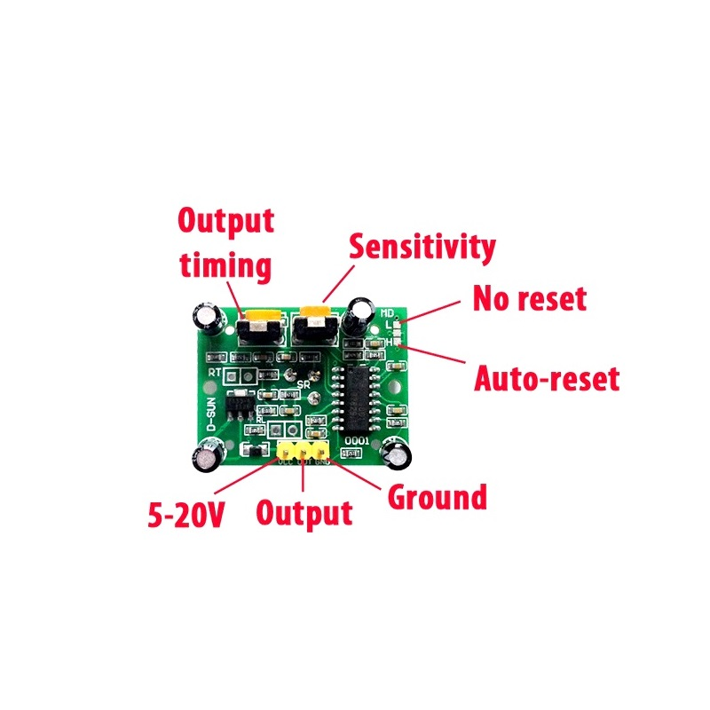
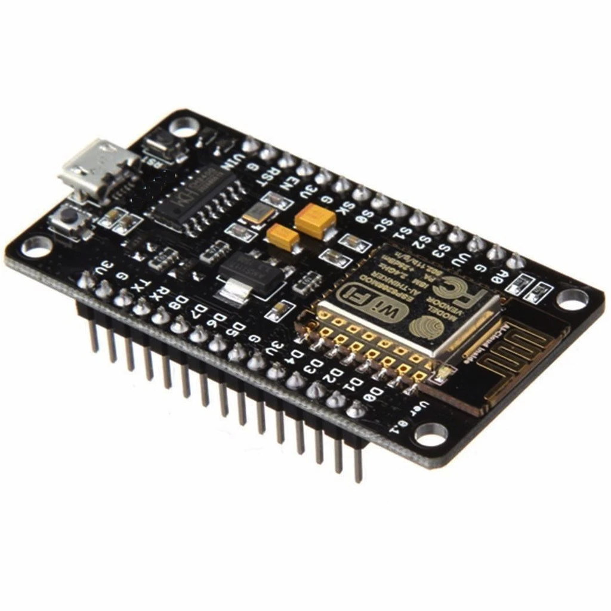
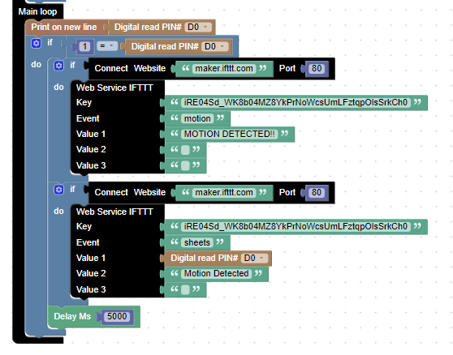
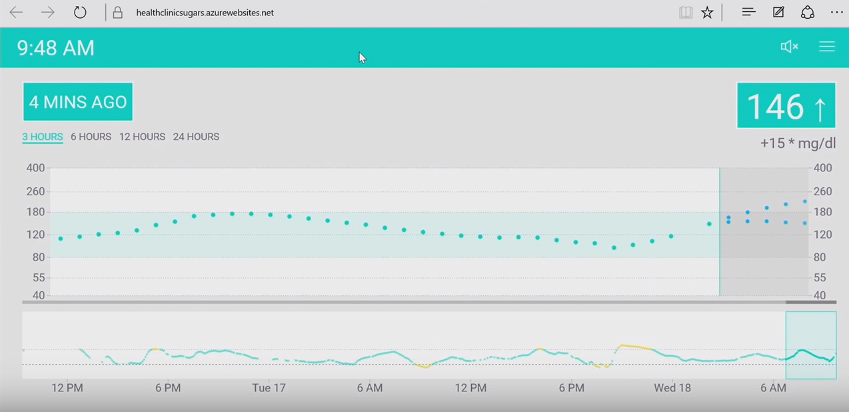
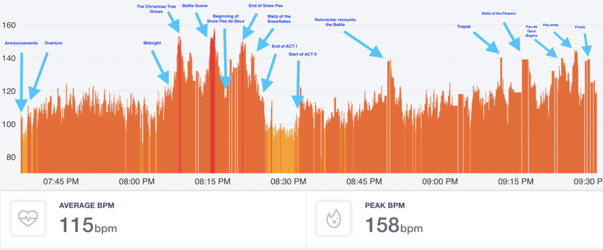

M-18
Motion Detection Using PIR Sensor
- PRATIK MAHANKAL 161
- MONISH RAVAL 164
- NIGEL MALAPPAN 162
INTRODUCTION :
In today’s fast lane world , you are either hunting or being hunted . You don’t know who’s lurking behind you a friend or a foe. Safety has become one of the basic necessities and safety is what the motion detecting sensors are going to provide. A couple of years back before the wireless technology kicked in the security systems basically consisted of three major components which are flood lamps , motion detecting sensor and a beeper. As soon as, the motion was detected the beeper would go off and the people within the house would be alerted. But now-a-days the wireless technology makes it much easier to access the security system while you are sitting in your office and having a nice cup of tea. And our project basically stresses on this type of security systems.
PIR SENSOR :
The PIR sensor consists of three major parts viz. the dome, circuit board the
IC. Let’s begin with the dome; it definitely acts as a protection for the sensor but that
is its secondary function. As for its primary function; the dome is made up of small
fresnel lenses which provides the sensor with a wide range of view that is of 108º
from left to right and 70º from top to bottom.The next main component is the IC BISS0001 it is required to run the most
basic functions such as taking inputs and outputs, delay time adjustments, sensitivity
adjustments and many more….

- BASIC WORKING
As the PIR sensor works at a preferred voltage of 5V at first a 5V input is given to the
PIR after which the BISS0001 gives the sensor a continuous supply for which to
stabalize the sensor requires a warm up time of 1 minute after which if the motion is
detected as the output of 1. The sensitivity of the sensor can be increased by using the
sensitivity adjustment dial and the output delay time can be adjusted by using the
delay adjustment dial. The fresnel lenses present on the dome takes in the sudden
spike in heat intensity as the input for the further computing. The output is provided to
the ESP as an input.
- VOLTAGE
The voltage required for the PIR to function at full power is preferred to be 5V if
excess voltage is provided the internal voltage regulator which converts the outgoing
voltage to 3.3V that excess voltage is dissipated into the environment in the form of
heat. Thus the 5V input is preferred as to avoid the excess heat.
ESP8266

The ESP8266 is a low-cost Wi-Fi microchip, with a full TCP/IP stack and microcontroller capability,
produced by Espressif Systems in Shanghai, China. The chip first came to the attention of
Western makers in August 2014 with the ESP-01 module, made by a third-party manufacturer Ai-
Thinker. This small module allows microcontrollers to connect to a Wi-Fi network and make simple
TCP/IP connections using Hayes-style commands. However, at first there was almost no English-
language documentation on the chip and the commands it accepted. The very low price and the
fact that there were very few external components on the module, which suggested that it could
eventually be very inexpensive in volume, attracted many hackers to explore the module, the chip,
and the software on it, as well as to translate the Chinese documentation. ESP8266 has an 1 MiB of
built-in flash, allowing the building of single-chip devices capable of connecting to Wi-Fi.
Setting up the ESP8266:

Main loop for checking motion and triggering Notification and an update to the Google sheets:

IFTTT :
IFTTT(If This Then That) is a free web-based server, thst can host multiple applets. An applet gets triggered when it gets pinged by the IoT device. In this the server is pinged by using the ESP8266 WiFi-module.
Notification :
Google Sheets :
 It also updates the Google sheets by using Google Sheets API(Application Program Interface).
It also updates the Google sheets by using Google Sheets API(Application Program Interface).
UI website to access the information.
FUTURE SCOPE OF THE PROJECT :
For the motion detection,we built an infrastructure to collect the digital data(i.e. 0 or 1 ).
We can built a similar infrastructure to store the analog values.
Real-Time Blood Sugar Level Analysis :

There is a man named Scott Hanselman who created a similar devices and also connected the insulin pump to his arm. When his blood sugar levels differ by a certian range, the IoT devices notifies him and directly pumps insulin in his arm.
Blood sugar level also spikes due to stress.
The stored data(throughout the day) in the cloud can also be visualized in a graphical manner to locate the time frames where stress is caused.
Monitoring Heart-Rate for Detecting Abnormality:

Using machine learning we can also pick out the abnormality in the data caused by minor heart failures or irregular beats.